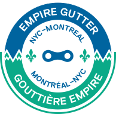

About
Routes
Earn the emblem
En
|
Fr
Empire Gutter: Peer sourced bicycle route from New York City to Montreal, Quebec Canada
Routes
New York State Bike Route 9 Suggested route Scenic route Mountainous route